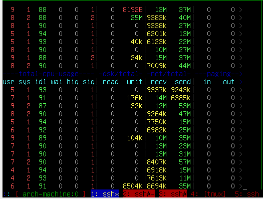
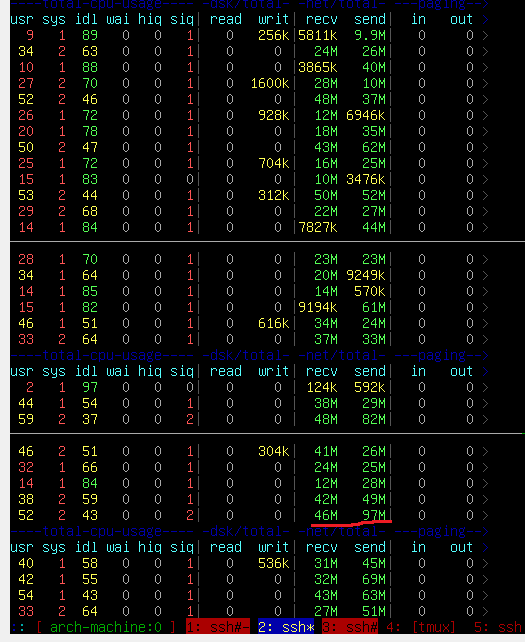
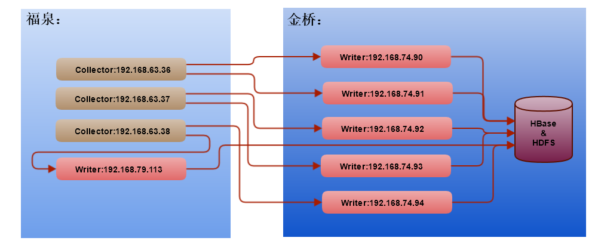
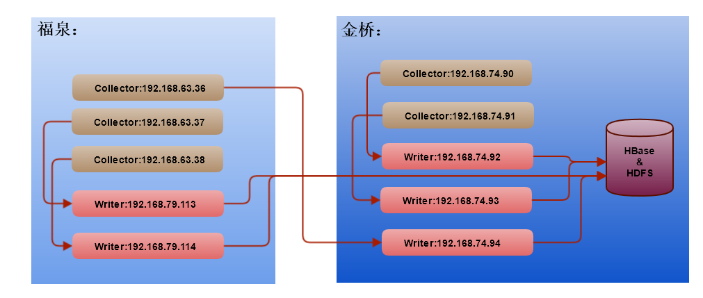
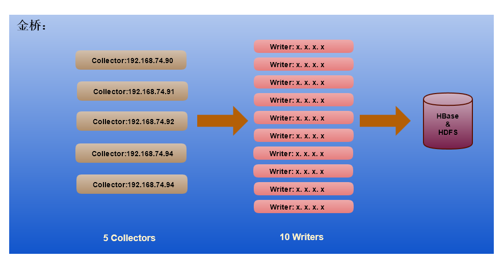

原先的部署方案：
由于业务的发展，现在发生了很大的变化
现需要作出一些调整：
writer由一个拆分成了五个独立的writer,分别以独立的进程运行
Collector:
Writer:
目前金桥的临时部署方案：
下图是在13:25集到的collector的网络流量

下图是在13:25集到的writer的网络流量

可看出：
可以认为3台collector与6台writer在现状下是满负荷运行，为了logging系统的稳定运行与未来一段时间内的增量，可以提供一宝的冗余，建议:



| 服务器 | IP | 域名 | CPU/RAM/HD | OS | 用途 | |
|---|---|---|---|---|---|---|
| SVR2206HP360 | 192.168.63.36 | collector.logging.sh.ctriptravel.com | CentOS | 用于Collector | ||
| SVR2207HP360 | 192.168.63.37 | |||||
| SVR2208HP360 | 192.168.63.38 | |||||
| SVR2589HP360 | 192.168.63.1 | |||||
| SVR2590HP360 | 192.168.63.2 | |||||
| SVR2594HP360 | 192.168.63.6 | |||||
| SVR2591HP360 | 192.168.63.3 | CentOS | 用于Writer | |||
| SVR2592HP360 | 192.168.63.4 | |||||
| SVR2593HP360 | 192.168.63.5 | |||||
| SH02SVR2570 | 10.8.74.90 | |||||
| SH02SVR2571 | 10.8.74.91 | |||||
| SH02SVR2572 | 10.8.74.92 | |||||
| SH02SVR2573 | 10.8.74.93 | |||||
| SH02SVR2574 | 10.8.74.94 | |||||
| SVR2025HP360 | 192.168.79.113 | CentOS | 用于Writer | 暂借的机器 | ||
| SVR2028HP360 | 192.168.79.114 | |||||
| SVR2209HP360 | 192.168.63.39 | traceview.logging.sh.ctriptravel.com | CentOS | 应用服务器，用于部署TraceView | ||
| SVR2210HP360 | 192.168.63.40 | |||||
| VMS01227 | 192.168.63.9 | browser.logging.sh.ctriptravel.com | CentOS | 应用服务器，用于部署LogBrowser | ||
| VMS01232 | 192.168.63.10 | |||||
| VMS01233 | 192.168.63.11 | |||||
| VMS01228 | 192.168.79.183 | rest.logging.sh.ctriptravel.com | CentOS | 应用服务器，用于部署RestApi | ||
| VMS01229 | 192.168.79.184 | |||||
| VMS01230 | 192.168.79.185 | |||||
| VMS01231 | 192.168.79.186 |